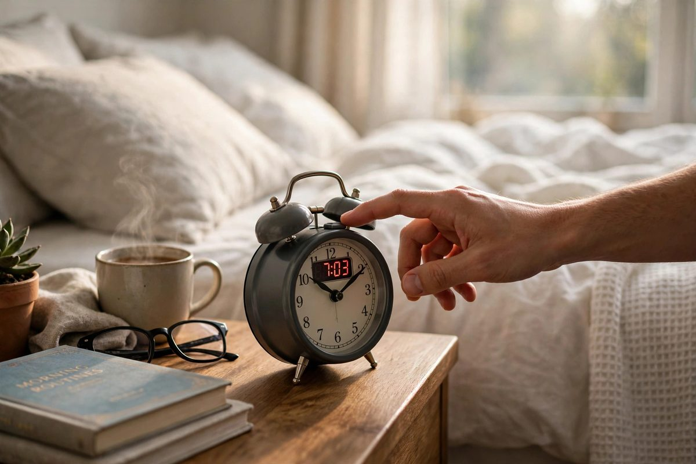

Wake-Up Time Calculator: A Guide
How to choose the best alarm time for your bedtime, and why the right alarm time matters more than the hour you go to bed.
Most people choose a bedtime and let the alarm follow, but the alarm time is the one that decides how you feel in the morning. A wake-up time calculator works the other way round from a bedtime calculator: it starts from the time you go to bed and shows the alarm times that land at the end of a sleep cycle. This guide explains how to use it and why it matters.
Start from your real bedtime
Enter the time you actually get into bed and fall asleep, not the time you intend to. If you get into bed at 11 p.m. and take 15 minutes to fall asleep, your sleep starts at 11:15 p.m., and the cycles count from there. Be honest about the fall-asleep time: people who read or scroll in bed often take 30 minutes or more, and that shifts every alarm time by the same amount. The calculator's answer is only as good as these two inputs.
Read the four alarm times
The calculator gives four alarm times, for three, four, five and six cycles, which are 4.5, 6, 7.5 and 9 hours of sleep. For a bedtime of 11:15 p.m., the times are 3:45 a.m., 5:15 a.m., 6:45 a.m. and 8:15 a.m. Most adults should choose the 7.5-hour or 9-hour time. The shorter times are useful when you must wake early for a particular reason, and they are far better than a random alarm time, because they still land at the end of a cycle.
Why the alarm time matters more than the bedtime
You cannot control exactly when you fall asleep, but you can control exactly when the alarm rings. A bedtime is a plan; an alarm is a fact. Choosing an alarm that lands at the end of a cycle means you wake during light sleep, when the body is already close to waking, rather than in the middle of deep sleep, when it is hardest to wake. That single choice is often the difference between a clear morning and a groggy one, even when the total hours are the same.
The snooze trap
Snoozing for nine minutes does not add useful sleep, because it is too short for a new cycle and it usually drops you back into light sleep just as the alarm rings again. Worse, it fragments the last part of the night and leaves you groggier than if you had got up at the first alarm. If your alarm time is cycle-aligned, you should wake feeling reasonably clear, and getting up straight away preserves that feeling. Put the alarm across the room if you need to, so getting up is the only way to silence it.
Adjusting over a week
Use the same bedtime and the same cycle-aligned alarm for a week, and notice how you feel. If you wake before the alarm and feel fine, you may need one cycle less, and you can move the alarm earlier. If you are groggy at the alarm, try the next cycle later, or move your bedtime earlier by 15 minutes. Your cycle length may differ slightly from 90 minutes, so small adjustments are normal. After a week, you will have a bedtime and an alarm time that work for you, and you can stop calculating and simply keep the schedule.
A worked example for an 11 p.m. bedtime
Take a person who goes to bed at 11 p.m. and takes 15 minutes to fall asleep, so sleep starts at 11:15 p.m. The calculator gives four alarm times: 3:45 a.m. for three cycles, 5:15 a.m. for four, 6:45 a.m. for five, and 8:15 a.m. for six. The sensible choices are 6:45 a.m. for seven and a half hours or 8:15 a.m. for nine hours. If they must wake at 6 a.m. for work, the nearest cycle-aligned time is 5:15 a.m., which gives six hours, or 6:45 a.m., which is too late. The choice is between an earlier alarm with less sleep and a later bedtime the night before, and the calculator makes the trade-off visible rather than leaving it to guesswork.
Frequently Asked Questions
How do I choose the best alarm time?
Count forward from when you fall asleep in 90-minute cycles, and choose the alarm that gives you 7.5 or 9 hours and lands at the end of a cycle.
Is snoozing bad?
Yes, mostly. Nine minutes is too short for a new cycle and fragments the end of your night, leaving you groggier than getting up at the first alarm.
What if I wake before my alarm?
That is a good sign. You may need one cycle less, and you can move the alarm earlier by 90 minutes.